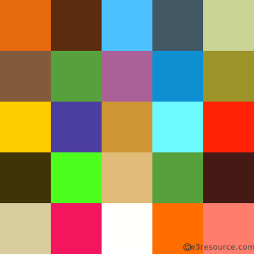

The Chrome Screen Reader is an extension developed to help visually impaired people consume web content.
It was originally developed as a part of the Google hackathon in Warsaw, Poland, circa 2012.
The original developers who won the hackathon are:
Pawel Uchida-Psztyc
Wojciech Kalicinski
We didn't maintain the project for years because of the number of screen readers available on the market. However, to this day, I receive comments and questions about the extension, so I decided to rewrite the extension and actively maintain it.

A random image